library(tidyverse)
library(haven) #Stata failide jaoks
library(rdrobust)
library(lmtest)
library(sandwich)
library(stargazer)
library(rdrobust)
library(ivreg)6 Regressiooni katkemise meetod
Poolik - arenev
6.1 Mudeli seade
Regressiooni katkemise disain (Regression Discontinuity Design, RDD) on kvaasieksperimentaalne meetod põhjusliku mõju hindamiseks, kui osalemine programmis või meetmes sõltub mõnest pidevast tunnusest (nt vanus, sissetulek, hinne) ja selgelt määratletud lõikepunktist.:contentReferenceoaicite:0
Tüüpilised näited:
- pensioniõigus alates vanusest 63 või 65
- tasuta hambaravi kuni 19. eluaastani
- toetus, kui käive langeb rohkem kui 30%
- stipendium, kui hinne ületab 4,5
Oluline mõte: me ei saa leida täpselt samasugust osalus- ja võrdlusrühma (puudub ühine tugi, common support), kuid saame võrrelda väga lähedal lõikepunktile olevaid isikuid: nt 64 vs 65 aastat, hinne 4,4 vs 4,6.
Tähistused
Olgu:
- \((Y_i(1)\) – isiku \(i\) potentsiaalne tulemus, kui ta osaleb programmis (D=1)
- \((Y_i(0)\) – potentsiaalne tulemus, kui ta ei osale (D=0)
- \(D_i \in \{0,1\}\) – tegelik osalemine meetmes
- \(X_i\) – määramismuuttuja (vanus, hinne, sissetulek), mis määrab abikõlblikkuse
- \(c\) – lõikepunkt, lävend (cutoff)
Vaatleme tinglikke keskmisi:
\[ m_1(x) = \mathbb{E}[Y_i(1)\mid X_i = x], \quad m_0(x) = \mathbb{E}[Y_i(0)\mid X_i = x]. \]
RD meetod põhineb ideel, et vahetult lõikepunkti ümbruses on isikud “peaaegu juhuslikult” jaotatud.
Järsk (sharp) disain
Määramistingimus
Järsk disain (sharp design) tähendab, et määramismuutuja \(X_i\) ja lõikepunkt \(c\) määravad osalemise deterministlikult:
\[ D_i = \mathbf{1}(X_i \ge c), \]
kus \(\mathbf{1}(\cdot)\) on indikaatorfunktsioon.
- Kui \(X_i \ge c\), siis kõik osalevad: \(D_i = 1\)
- Kui \(X_i < c\), siis keegi ei osale: \(D_i = 0\)
Te gelikult vaatleme täheldatud tulemust
\[ Y_i = D_i Y_i(1) + (1-D_i)Y_i(0). \]
Mõju hindamise valem (sharp RDD)
RDD põhiobjekt on lokaalne keskmine mõju lõikepunktis:
\[ \tau^{SRD} = \lim_{x \downarrow c} \mathbb{E}[Y_i \mid X_i = x] - \lim_{x \uparrow c} \mathbb{E}[Y_i \mid X_i = x]. \]
Sõnades:
– võtame tingliku keskmise väljundi vahetult lõikepunktist paremal (abikõlblikud)
– lahutame sellest tingliku keskmise väljundi vahetult lõikepunktist vasakul (mitteabikõlblikud).
Kui pidevuse eeldus (vt allpool) kehtib, siis see vahe identifitseerib:
\[ \tau^{SRD} = \mathbb{E}\big[Y_i(1) - Y_i(0) \,\big|\, X_i = c\big], \]
ehk lokaalse ATE – Local Average Treatment Effect lõikepunkti juures (LATE).
Hägus (fuzzy) disain
Määramistingimus
Hägus disain (fuzzy design) tähendab, et lõikepunkt ei määra osalemist deterministlikult:
- osalemise tõenäosus hüppab lõikepunktis, kuid
- enne lõikepunkti on osa isikuid, kes ikkagi osalevad
- pärast lõikepunkti on osa, kes ei osale.
Formaalne:
\[ p(x) = \Pr(D_i = 1 \mid X_i = x) \]
on katkev punktis (c), st
\[ \lim_{x \downarrow c} p(x) \neq \lim_{x \uparrow c} p(x), \]
aga kumbki pole 0 ega 1.
Mida see tähendab sisuliselt?
– reegel on olemas (nt pensioniiga 63)
– aga osa inimestest läheb pensionile varem või hiljem → reeglit ei järgita täielikult
– lõikepunkti lähedal on \(X_i\) käitumas nagu instrumentmuutuja: mõjutab tugevalt osalemise tõenäosust, mitte otseselt tulemust.
6.2 Mõju hindamise valem (fuzzy RDD, Wald)
Hägusa disaini korral võrdleme lisaks \(Y\) hüppele ka meetmes osalemise hüpet:
\[ \Delta Y = \lim_{x \downarrow c} \mathbb{E}[Y_i \mid X_i = x] - \lim_{x \uparrow c} \mathbb{E}[Y_i \mid X_i = x], \]
\[ \Delta D = \lim_{x \downarrow c} \mathbb{E}[D_i \mid X_i = x] - \lim_{x \uparrow c} \mathbb{E}[D_i \mid X_i = x]. \]
Lokaalne Waldi hinnang:
\[ \tau^{FRD} = \frac{\Delta Y}{\Delta D}. \]
See on analoogne IV-Waldi hinnanguga: kui lõikepunkti juures oleks tõenäosus muutunud 0-lt 1-le, siis \(\Delta Y\) olekski mõju; kuna muutus on väiksem, skaleerime selle üles jagades \(\Delta D\)-ga.
Pidevuse eeldus
RDD tuum on pidevuse eeldus (continuity assumption). Informaalne mõte:
Kõik muud tegurid peale programmi mõju muutuvad lõikepunkti ümbruses “sujuvalt” (pidevalt). Ainus diskreetne hüpe \(Y\)-s lõikepunktis tuleb programmist.
Formaalne kuju:
\[ \lim_{x \downarrow c} \mathbb{E}[Y_i(0)\mid X_i=x] = \lim_{x \uparrow c} \mathbb{E}[Y_i(0)\mid X_i=x] \]
ja terava disaini korral samamoodi \(Y_i(1)\) jaoks, või üldisemalt, et potentsiaalsete tulemuste tinglikud keskmised on pidevad \(x=c\) juures.
Lisaks saame kontrollida, kas ka $X£-i tihedusfunktsioon on pidev lõikepunkti juures (vt McCrary test).
Pidevuse rikkumised:
- inimesed manipuleerivad oma $X£-i (hinne, sissetulek) üle/alla piiri, et reegliga mängida
- samal lõikepunktil juhtub mõni muu poliitikamuutus (teine reform, teine programm)
- lõikepunkt ise on endogeenne (nt “nutikad” ettevõtted planeerivad töötajate arvu täpselt alla piiri, et toetust saada)
McCrary test: x-jaotuse pidevus
Kui inimesed saavad määramismuutujat \(X\) ise mõjutada (nt taotlusvormi täitmise kuupäeva, sissetuleku deklareerimist), võivad nad “koonduda” lõikepunkti alla või üles. Selle tuvastamiseks kasutatakse McCrary tihedustesti.
- \(H_0\): \(X\) tihedus on lõikepunkti juures pidev (ei ole manipulatsiooni)
- \(H_1\): tiheduses on hüpe lõikepunkti juures (viitab manipulatsioonile)
Idee:
- hinnatakse \(X\) tihedust lõikepunkti vasakul ja paremal (nt lokaalse polünoomi abil),
- testitakse, kas hinnatud tihedused erinevad statistiliselt olulisel määral.
Kui testi tulemus ei lükka \(H_0\) hüpoteesi ümber (puudub oluline hüpe tiheduses), on pidevuse eeldus ja “manipuleerimatuse” eeldus usutavam.
Platseebo test
Platseebo test (või “fake cutoff test”) kontrollib, kas meie hinnatud mõju sõltub spetsiifiliselt just tegelikust lõikepunktist.
Idee:
- valime valed (platseebo) lõikepunktid, mis ei tohiks sekkumisega seotud olla;
- jooksutame RDD-analüüsi nende uute lõikepunktide juures;
- eeldus: me ei tohiks leida süsteemselt suuri ja statistiliselt olulisi mõjusid.
Kui leiame tugevaid “mõjusid” ka mujal, võib see viidata:
mudeli ülesobitamisele (liiga paindlik polünoom)
andmetes olevale muule mittelineaarsusele, mida tõlgendatakse ekslikult “mõjuna”
valesti määratud bandwidth’ile või kernelile.
Kui ainult tõelise lõikepunkti juures on selge ja stabiilne mõju, suurendab see usaldust RDD tulemuste suhtes.
6.3 Näide: Vanaduspensioniiga, pensionide saamine ja tööaeg Eestis 2010.
- aastal oli meeste seadusjärgne pensioniiga 63 aastat. Selles vanuses võiksid nad saada täispensioni. Nad võivad minna pensionile varem (ja kaotada pensioni suuruses) või hiljem pensionile jääda (ja neil on suurem pension). Neil võib olla ka eripension, mida mõnikord maksti varem, või ka töövõimetuspension.
Pensioniiga annab õiguse vanaduspensionile, väikesele, kuid kindlale lisasissetulekule, mis võib võimaldada vanematel inimestel oma tööaega lühendada.
Meie uurimisküsimus: - kuidas mõjutab pensioni saamist nominaalpensioniikka (63) jõudmine? (Me peame seda järsuks disainiks– sest õigus tekib igal mehel) - kuidas mõjutab pensioni saamine nominaalpensioniea (63) lähedal töötunde. Seda võiks pidada hägusaks disainiks, sest nominaalpensioniikka jõudmine mõjutab pensioni saama hakkamist vaid osadel inimestel.
Probleem on selles, et vanus ise mõjutab tervist, mis loomulikult vähendab tööaega. Kuidas neid mõjusid eristada – üks tervise ja teine lisatulu kaudu? Meil ei ole tervise jaoks selget mõõdikut, seega kasutame vanust lihtsalt lähendina.
Teeme oletuse: vanuse mõju tööajale tervise kaudu on pidev, kuid vanuse mõju pensioni saamise õigusele on diskreetne (või hüppeline).
Laadige paketid.
Laadige andmed
Meil on järgmised tunnused
- age
- ppension - 1-0 tunnus, kui inimene saab pensioni (meie meede)
- oldage – inimene saab vanaduspensioni
- disben – inimene saab töövõimetuspensioni
- hours – nädala töötunnid (meie väljund)
- employed - 1-0 kui inimesel on täisajaga töökoht
- taustatunnused: estlang (räägib Eesti keelt), haridus (haridustase: 1,2,3)
df <- read_dta("https://kodu.ut.ee/~avork/files/oppetoo/micro/pensioners.dta")Alati alusta joonistest
Tee joonis vanuse ja pensioni saamise vahel
df %>% ggplot(aes(x=age, y = pension)) +
geom_point()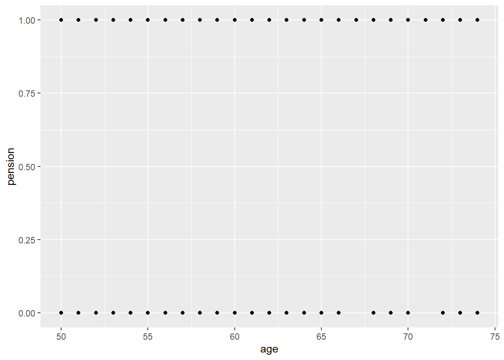
lisa sammhaaval a) silumine b) värvi vanuse järgi age > 62 c) tee punctid väiksemaks (size = 0.5) ja läbipaistvaks (alpha = 0.5) d) lisa juhuslikku müra punktidele “position = position_jitter(width = 0.2,height = 0.05, seed = 1234)” e) lisa vertikaalne joon 62.5
Vaata, kuidas joonis muutub
df %>% ggplot(aes(x=age, y = pension,
color = age>62)) +
geom_point(size = 0.5, alpha = 0.5,
position = position_jitter(width = 0.2,height = 0.05, seed = 1234)) +
geom_smooth() +
geom_vline(xintercept = 62.5) + theme_bw()`geom_smooth()` using method = 'gam' and formula = 'y ~ s(x, bs = "cs")'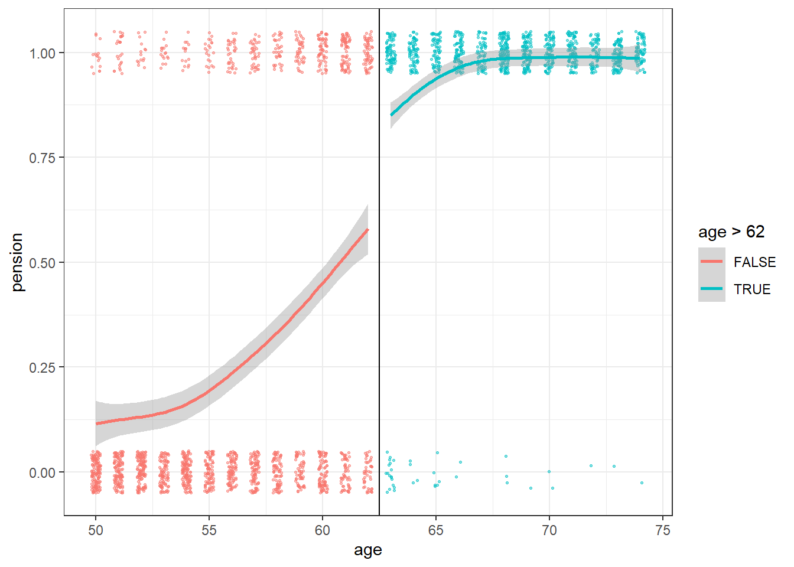
Keskmine vanusrühmade järgi
Arvutage pensioni saavate meeste keskmine osakaal (muutuja pension), keskmine tööaeg (muutuja hours) vanuse järgi ja näitaja (over62), kui vanus on üle 62,5
dfmeanprop <- df %>% group_by(age) %>%
summarise(pension = mean(pension)*100,
hours = mean(hours),
over62= as.factor(mean(age>62.5)))Joonistage igas vanuses pensioni saavate meeste keskmine osakaal, värvige see üle62 võrra. Lisa silutud joon.
dfmeanprop %>% ggplot(aes(x=age, y = pension, color = over62)) +
geom_point() +
geom_smooth(se= FALSE) +
scale_x_continuous(breaks = c(seq(50, 75, 5)))`geom_smooth()` using method = 'loess' and formula = 'y ~ x'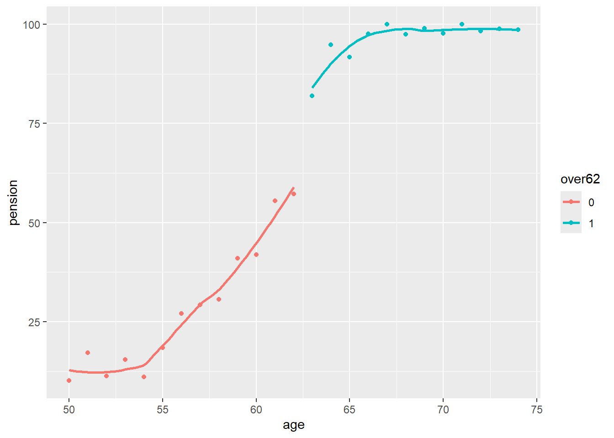
Kas 63-aastaselt on hüpe?
Kas pensioniea mõju pensioni saamisele on järsk või hägune?
Vanus ja töötunnid
Joonistage lähteandmet põhjal seos iganädalaste töötundide ja vanuse järgi. Kasutage sama koodi, mida kasutasite pensioni jaoks, kuid asendage pension töötundidega. Vajadusel muutke position_jitter
df %>% ggplot(aes(x=age, y = hours, color = age>62)) +
geom_point(size = 0.5, alpha = 0.5,
position = position_jitter(width = 0.2,height = 1, seed = 1234)) +
geom_smooth() +
geom_vline(xintercept = 62.5)`geom_smooth()` using method = 'gam' and formula = 'y ~ s(x, bs = "cs")'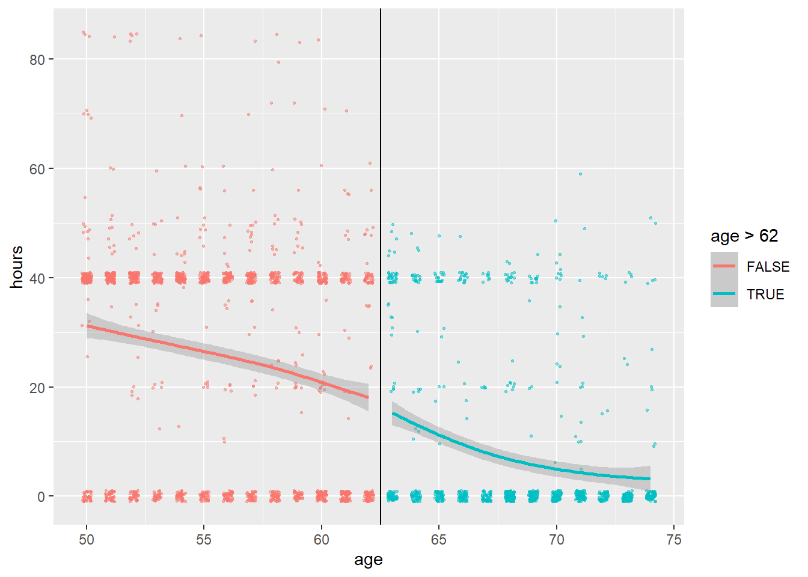
Joonista samuti grupeeritud andmete järgi
dfmeanprop %>% ggplot(aes(x=age, y = hours, color = over62)) +
geom_point() +
geom_smooth(method = lm, se = FALSE) +
geom_vline(xintercept = 62.5)`geom_smooth()` using formula = 'y ~ x'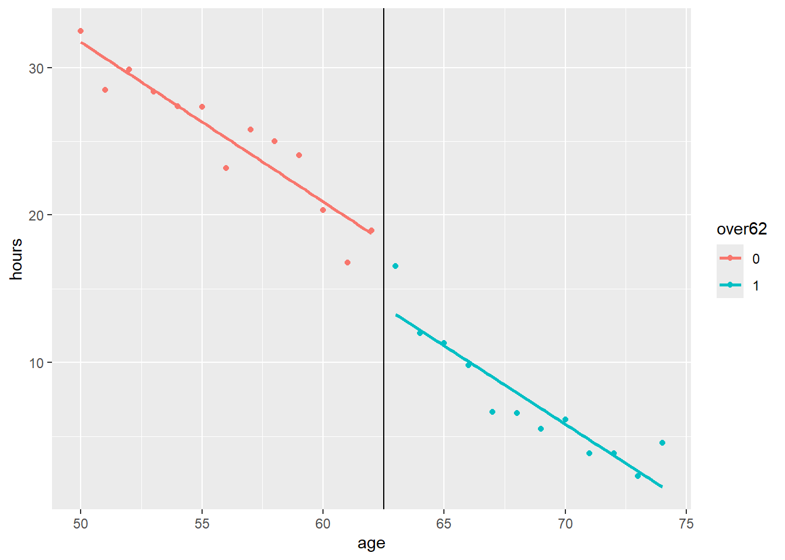
Tee lõikepunkt ja leia vanus selle suhtes
Teeme muutuja ‘penage’ = 62.5
penage = 62.5Looge uus muutuja “agec”, mis on erinevus vanusest 62,5. (Me ei tea täpselt, millal inimene sai 63-aastaseks, seetõttu kasutame 62,5). Looge tsentraliseeritud vanuse ruut ja kuupliige. Genereerige ka näitaja (1-0) muutuja, kui vanus on vanem kui pensioniiga: “overpenage”.
df <- df %>%
mutate(agec = age-penage,
agec2 = agec*agec,
agec3 = agec*agec*agec,
overpenage = (age>penage)*1)Järsk (terav) disain – pensioniea mõju tõenäosusele saada pensioni
Vanaduspensioni ea kättejõudmise mõttes on tegu järsu disainiga (inimestel tekib õigus täispensionile, küll aga mõned valivad või saavad minna varem ja mõned hiljem). Võrdleme pensioni saamist enne ja pärast pensioniiga Võtame u = 2. Võrdleme pensioni saamist vanuses 61-62 ja 63-64.
u = 2Leia käsitsi osakaalud enne ja pärast pensioniiga
meanpensbelow <- df %>% filter(age>penage-u, age <penage) %>%
summarise(meanpensbelow = mean(pension)) %>% as.numeric()
meanpensabove <- df %>% filter(age>penage, age <penage+u) %>%
summarise(meanpensabove = mean(pension)) %>% as.numeric()Kui suur on erinevus pensioni saamises enne ja pärast pensioniiga?
meanpensabove - meanpensbelow[1] 0.3123874Võtke u = 1. Kui palju tulemus muutub?
Mõju hindamine regressioonimudeliga
Hinnake lineaarne tõenäosusmudel (mudel1), kus pensioni näitaja sõltub näitajast, kui inimene on pensionieas ja vanus. Lisage seejärel vanuse ruutliige (mudel2) ja kuupliige (mudel3)
Muutuja “overpenage” koefitsient näitab pensioniea mõju pensioni saamise tõenäosusele. Vanus iseloomustab teiste kanalite mõju, nt terviseseisundi ja töövõimetuspensioni saamise.
model1 <- lm(pension ~ overpenage + agec, data = df)
model2 <- lm(pension ~ overpenage + agec + agec2 , data = df)
model3 <- lm(pension ~ overpenage + agec + agec2 + agec3, data = df)Võrrelge tulemusi tabelis
stargazer(model1, model2, model3, type = "text", no.space = TRUE)
===================================================================================================
Dependent variable:
-------------------------------------------------------------------------------
pension
(1) (2) (3)
---------------------------------------------------------------------------------------------------
overpenage 0.316*** 0.361*** 0.221***
(0.028) (0.029) (0.037)
agec 0.029*** 0.025*** 0.050***
(0.002) (0.002) (0.005)
agec2 -0.001*** -0.001***
(0.0002) (0.0002)
agec3 -0.0002***
(0.00003)
Constant 0.472*** 0.497*** 0.578***
(0.016) (0.016) (0.021)
---------------------------------------------------------------------------------------------------
Observations 2,607 2,607 2,607
R2 0.496 0.503 0.509
Adjusted R2 0.495 0.502 0.509
Residual Std. Error 0.354 (df = 2604) 0.352 (df = 2603) 0.350 (df = 2602)
F Statistic 1,279.302*** (df = 2; 2604) 877.175*** (df = 3; 2603) 675.659*** (df = 4; 2602)
===================================================================================================
Note: *p<0.1; **p<0.05; ***p<0.01Pensioniea vanuspiiri ületamise efekt tõenäosusele, et mehed saavad pensioni on 31.6 protsendipunkti kui lubame lineaarse liikme mudelisse, 36.1 protsendipunkti ruutliikega mudelis ja 22.1 protsendipunkti kuuliikmega mudelis. Seega see, millist mittelineaarsust me lubame vanuspiiri lähedal, mõjutab meie tulemusi üsna palju.
Saame lubada ka erinevaid parameetreid lõikepunkti mõlemale poolele. overpenage koefitsient näitab nüüd pensioniea kättejõudmise mõju pensioni saamise tõenäosusele lõikepunktis.
model1a <- lm(pension ~ overpenage + agec +
agec*overpenage, data = df)
model2a <- lm(pension ~ overpenage + agec + agec2 +
agec*overpenage + agec2*overpenage , data = df)
model3a <- lm(pension ~ overpenage + agec + agec2 + agec3 +
agec*overpenage + agec2*overpenage + agec3*overpenage, data = df)stargazer(model1a, model2a, model3a, type = "text", no.space = TRUE)
=================================================================================================
Dependent variable:
-----------------------------------------------------------------------------
pension
(1) (2) (3)
-------------------------------------------------------------------------------------------------
overpenage 0.363*** 0.200*** 0.176***
(0.028) (0.042) (0.058)
agec 0.039*** 0.086*** 0.073***
(0.002) (0.010) (0.025)
agec2 0.004*** 0.001
(0.001) (0.004)
agec3 -0.0001
(0.0002)
overpenage:agec -0.028*** -0.045*** 0.009
(0.004) (0.016) (0.042)
overpenage:agec2 -0.006*** -0.012
(0.001) (0.008)
overpenage:agec3 0.001
(0.0004)
Constant 0.535*** 0.640*** 0.625***
(0.018) (0.027) (0.038)
-------------------------------------------------------------------------------------------------
Observations 2,607 2,607 2,607
R2 0.505 0.511 0.511
Adjusted R2 0.505 0.510 0.510
Residual Std. Error 0.351 (df = 2603) 0.349 (df = 2601) 0.349 (df = 2599)
F Statistic 885.732*** (df = 3; 2603) 543.685*** (df = 5; 2601) 388.675*** (df = 7; 2599)
=================================================================================================
Note: *p<0.1; **p<0.05; ***p<0.01Näeme, et mida suurt mittelineaarsust lubada, seda väiksem mõjuhinnang on. Kuupliikmetega mudelis on pensioniea kättejõudmise mõju 17.6 protsendipunkti.
Edasijõudnutele: kasutame robustseid standardvigu, mis lubavad heteroskedastiivsust
stargazer(model1a, model2a, model3a,
se=list(sqrt(diag(vcovHC(model1a, "HC1"))),
sqrt(diag(vcovHC(model2a, "HC1"))),
sqrt(diag(vcovHC(model3a, "HC1")))),
type = "text", no.space = TRUE)
=================================================================================================
Dependent variable:
-----------------------------------------------------------------------------
pension
(1) (2) (3)
-------------------------------------------------------------------------------------------------
overpenage 0.363*** 0.200*** 0.176***
(0.030) (0.048) (0.068)
agec 0.039*** 0.086*** 0.073**
(0.003) (0.012) (0.033)
agec2 0.004*** 0.001
(0.001) (0.006)
agec3 -0.0001
(0.0003)
overpenage:agec -0.028*** -0.045*** 0.009
(0.004) (0.015) (0.042)
overpenage:agec2 -0.006*** -0.012*
(0.001) (0.007)
overpenage:agec3 0.001*
(0.0003)
Constant 0.535*** 0.640*** 0.625***
(0.024) (0.037) (0.053)
-------------------------------------------------------------------------------------------------
Observations 2,607 2,607 2,607
R2 0.505 0.511 0.511
Adjusted R2 0.505 0.510 0.510
Residual Std. Error 0.351 (df = 2603) 0.349 (df = 2601) 0.349 (df = 2599)
F Statistic 885.732*** (df = 3; 2603) 543.685*** (df = 5; 2601) 388.675*** (df = 7; 2599)
=================================================================================================
Note: *p<0.1; **p<0.05; ***p<0.01Mitteparameetriline hindamine
Kasutame silumist paketist rdrobust.
rdrobust(y = df$pension, x = df$age, c = 62.5) %>%
summary()Warning in rdrobust(y = df$pension, x = df$age, c = 62.5): Mass points detected
in the running variable.Sharp RD estimates using local polynomial regression.
Number of Obs. 2607
BW type mserd
Kernel Triangular
VCE method NN
Number of Obs. 1608 999
Eff. Number of Obs. 472 332
Order est. (p) 1 1
Order bias (q) 2 2
BW est. (h) 3.778 3.778
BW bias (b) 5.943 5.943
rho (h/b) 0.636 0.636
Unique Obs. 13 12
=====================================================================
Point Robust Inference
Estimate z P>|z| [ 95% C.I. ]
---------------------------------------------------------------------
RD Effect 0.185 1.921 0.055 [-0.003 , 0.333]
=====================================================================Tulemuste tõlgendamisest.
- Võib tulla hoiatus: masspunktid (mass points)
See tähendab, et vanusemuutujal on palju korduvaid väärtusi (meil täisaastad). See on vanusepõhiste RDD-de puhul tavaline – see ei riku disaini, kuid näitab, et jaotus ei ole täiesti sile.
- Valimi suurus Kokku on vaatlusi 2607 vaatluse. Hinnang tehakse aga lokaalsete lineaarsete regressioonidega, kolmnurkse kerneliga lõikepunkti ümber. Optimaalne ribalaius (mserd) on umbes 3,778 aastat mõlemal pool lävendit, seega kasutatakse enim vanuseid umbes 58–67.
“BW type mserd” – ribalaius või aken (bandwidth) on valitud nn mean squared error optimal for RD (ehk mserd) reegli alusel. See on automaatne optimaalne akna valik, mis püüab tasakaalustada täpsust ja nihet.
“Kernel Triangular” – kasutatakse kolmnurkset kernelit (tuuma), mis tähendab, et lõikepunktile kõige lähemad vaatlused saavad suurima kaalu ja kaugemad väiksema. See on RDD puhul standardne valik, sest rõhutab just lõikepunkti ümbrust.
VCE method NN – dispersioonide ja standardvigade arvutamisel on kasutatud nearest-neighbor (NN) meetodit, mis põhineb lähimate punktide võrdlemisel. See on üks võimalikest robustsete standardvigade arvutusviisidest.
- Efektiivne vaatlustearv Kuigi kokku on 2607 vaatluse, panustavad tegelikult kõige enam 472 vaatlust enne ja 332 pärast lõikepunkti, sest kaalumine annab rohkem kaalu neile, kes on lõikepunktile lähedal.
Order est. (p) - lõikepunkti ümbruses on kasutatud esimese astme polünoomi, ehk lokaalset lineaarset regressiooni. See on RDD standardne valik.
Order bias (q) = 2 - võimaliku nihke hindamiseks kasutatakse teise astme polünoomi (ruutfunktsiooni). Teisisõnu, nihke parandust hinnatakse natuke paindlikuma mudeliga kui põhihinnangut.
BW est. (h) = 3.778 - Optimaalne aken hinnangu tegemiseks on 3,78 aastat mõlemal pool lõikepunkti.
W bias (b) = 5.943 - Nihke hindamiseks kasutatakse laiemat akent, 5,94 aastat mõlemal pool lõikepunkti. See on tavapärane, sest nihke hindamiseks on vaja rohkem andmeid.
rho (h/b) = 0.636 - See on suhe hinnangu akna ja nihke akna vahel: 3.78 / 5.94 ≈ 0.64. Väärtus alla 1 näitab, et nike hindamiseks kasutatakse suuremat akent kui põhihinnangu jaoks (mis on just õige).
Unique Obs. = 13 (vasakul), 12 (paremal) - lõikepunkti ümbruses on ainult 13 erinevat vanuseväärtust vasakul ja 12 erinevat vanuseväärtust paremal. Kuna vanus on diskreetne (tavaliselt täisaastad), ei ole lõikepunkti ümber väga palju erinevaid väärtusi, mis võib täpsust piirata.
- Koefitsient (mõju)
Tavaline hinnang lõikepunkti mõjule on 0,185. See tähendab, et pensioniea ületamine suurendab pensioni saamise tõenäosust 18,5 protsendipunkti võrra. Standardviga: 0,070 z-statistik: 2,64 p-väärtus: 0,008 → statistiliselt oluline 1% tasemel
- Robustne (bias-corrected) hinnang on konservatiivsem: z = 1,921, p = 0,055. See on vaid napilt oluline 10% tasemel, sest 95% usaldusvahemik on [−0,003; 0,333] ja hõlmab nulli.
Tulemuste usaldusväärsus sõltub seega ka sellest, kas kasutame tavalist või robustset hinnangut: tavalise järgi on efekt kindlalt oluline, robustse järgi piiri peal.
Kommentaar robustsete standardvigade kohta
Tavaline (“Conventional”) punkthinnang on lihtsalt vahe lõikepunkti vasakul ja paremal poolel lokaalse polünoomi ekstrapoleeritud väärtustes, antud akna korral.
Standardvead põhinevad asümptootilisel teoorial, kuid kipuvat liiga vähe arvestama nihet (bias), eriti väikeste valimite puhul.
“Robust bias-corrected (RBC) hinnang” - Calonico, Cattaneo ja Titiunik (2014) järgi püüab korrigeerida lõikepunkti lähedal tekkivat hinnangute nihet.
Alguses hinnatakse nihe kõrgema astme polünoomi abil.
Seejärel lahutatakse nihe tavalise hinnangu väärtusest ning arvutatakse uued standardvead, mis arvestavad nii valimi juhuslikkust kui ka nihke korrigeerimist.
Punktihinnang ise tavaliselt palju ei muutu, kuid usaldusvahemikud muutuvad laiemaks, sest standardvead suurenevad.
Seega on RBC hinnang konservatiivsem ja usaldusväärsem, vähendades riski vale-positiivsete tulemuste jaoks.
Ja ka graafik
rdplot(y = df$pension, x = df$age, c = 62.5)[1] "Mass points detected in the running variable."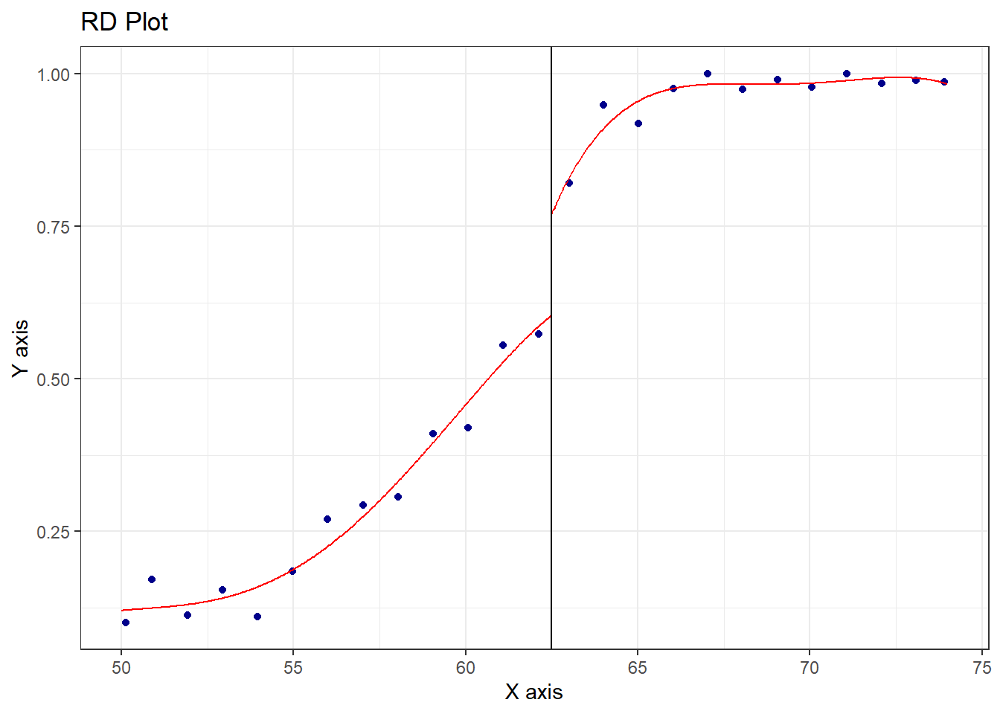
Pensioniea mõju töötundidele
Käsitleme pensioniea mõju töötundidele nüüd hägusa disainina, sest pensioniiga ei määra täpselt pensioni saamist.
Käsitsi LATE hägusa disaini jaoks
Arvutame käsitsi Waldi kohaliku statistiku (LATE) häguse disaini jaoks. Võtke +/- 2 aastat.
u = 5Oleme juba arvutanud keskmise pensionäride osa, mis jääb alla ja üle piirpunkti intervalli u piiresse. ‘meanpensbelow’ ja ‘meanpensabove’
Samamoodi arvutame keskmised töötunnid allpool ja kõrgemal: ” meanhoursbelow “meanhoursabove”.
meanhoursbelow <- df %>% filter(age>penage-u, age <penage) %>%
summarise(meanhourbelow = mean(hours)) %>% as.numeric()
meanhoursabove <- df %>% filter(age>penage, age <penage+u) %>%
summarise(meanhourabove = mean(hours)) %>% as.numeric()Leidke muutused
#muutus pensionäride osakaalus
meanpensabove-meanpensbelow[1] 0.3123874Eerinevus pensioni saajate osakaalus on seega 0.312
#muutus töötundides
meanhoursabove - meanhoursbelow[1] -9.098265Töötundide vähenemine on samal ajal -9.1 tundi nädalas.
LATE on suhtarv, mis skaleerib muutuse.
late = (meanhoursabove - meanhoursbelow) / (meanpensabove-meanpensbelow)
late[1] -29.12494Õigus saada vanaduspensioni vähendaks töötunde ligi -29.1249376 tunni võrra nädalas.
Aga, et paljud on juba varem läinud pensionile ja paljud lükkavad edasi, siis andmetest me näeme pensioniea ligidal vaid vähenemist -9.1 töötundi.
Regressioonimudel – kui oleks järsk disain
Hindame sarnased regressioonimudelid nagu üleval
model1 <- lm(hours ~ overpenage + agec, data = df)
model2 <- lm(hours ~ overpenage + agec + agec2 , data = df)
model3 <- lm(hours ~ overpenage + agec + agec2 + agec3, data = df)
stargazer(model1, model2, model3, type = "text", no.space = TRUE)
=================================================================================================
Dependent variable:
-----------------------------------------------------------------------------
hours
(1) (2) (3)
-------------------------------------------------------------------------------------------------
overpenage -3.984*** -4.002*** -1.638
(1.444) (1.496) (1.934)
agec -1.101*** -1.099*** -1.527***
(0.098) (0.106) (0.246)
agec2 0.0004 0.006
(0.008) (0.008)
agec3 0.003*
(0.002)
Constant 18.005*** 17.995*** 16.636***
(0.804) (0.833) (1.091)
-------------------------------------------------------------------------------------------------
Observations 2,607 2,607 2,607
R2 0.215 0.215 0.216
Adjusted R2 0.214 0.214 0.215
Residual Std. Error 18.326 (df = 2604) 18.330 (df = 2603) 18.320 (df = 2602)
F Statistic 355.784*** (df = 2; 2604) 237.099*** (df = 3; 2603) 178.938*** (df = 4; 2602)
=================================================================================================
Note: *p<0.1; **p<0.05; ***p<0.01Näeme, et mõju hinnang on palju väiksem ja sõltub kui paindlikku mudelit kasutame. Lineaarse ja ruutliikmetega mudels on mõju vaid 4 tundi. Kui lubame vanuse kuupfunktsiooni, siis ei ole mõju enam statistiliselt oluline.
Taas, kasutame praktikas robustseid standardvigu.
stargazer(model1, model2, model3,
se=list(sqrt(diag(vcovHC(model1, "HC1"))),
sqrt(diag(vcovHC(model2, "HC1"))),
sqrt(diag(vcovHC(model3, "HC1")))),
type = "text", no.space = TRUE)
=================================================================================================
Dependent variable:
-----------------------------------------------------------------------------
hours
(1) (2) (3)
-------------------------------------------------------------------------------------------------
overpenage -3.984*** -4.002*** -1.638
(1.528) (1.511) (2.066)
agec -1.101*** -1.099*** -1.527***
(0.101) (0.097) (0.256)
agec2 0.0004 0.006
(0.007) (0.007)
agec3 0.003*
(0.002)
Constant 18.005*** 17.995*** 16.636***
(0.861) (0.927) (1.181)
-------------------------------------------------------------------------------------------------
Observations 2,607 2,607 2,607
R2 0.215 0.215 0.216
Adjusted R2 0.214 0.214 0.215
Residual Std. Error 18.326 (df = 2604) 18.330 (df = 2603) 18.320 (df = 2602)
F Statistic 355.784*** (df = 2; 2604) 237.099*** (df = 3; 2603) 178.938*** (df = 4; 2602)
=================================================================================================
Note: *p<0.1; **p<0.05; ***p<0.01Kui olete vanem kui 63, väheneb tööaeg kõige paindlikumates mudelites vaid 1.64 tundi nädalas.
Silumise kasutamine
Jällegi kasutage kohalikku polünoomi silumist käsuga rdrobust, vaata ülalt käsku ja asenda pensioni saamine töötundidega
rdrobust(y = df$hours, x = df$age, c = 62.5) %>%
summary()Warning in rdrobust(y = df$hours, x = df$age, c = 62.5): Mass points detected
in the running variable.Sharp RD estimates using local polynomial regression.
Number of Obs. 2607
BW type mserd
Kernel Triangular
VCE method NN
Number of Obs. 1608 999
Eff. Number of Obs. 472 332
Order est. (p) 1 1
Order bias (q) 2 2
BW est. (h) 3.710 3.710
BW bias (b) 5.647 5.647
rho (h/b) 0.657 0.657
Unique Obs. 13 12
=====================================================================
Point Robust Inference
Estimate z P>|z| [ 95% C.I. ]
---------------------------------------------------------------------
RD Effect -0.134 -0.137 0.891 [-8.467 , 7.364]
=====================================================================Seekord näeme, et väga paindlikult hinnates, seos puudub. Saame vaadata seda ka joonisel.
rdplot(y = df$hours, x = df$age, c = 62.5)[1] "Mass points detected in the running variable."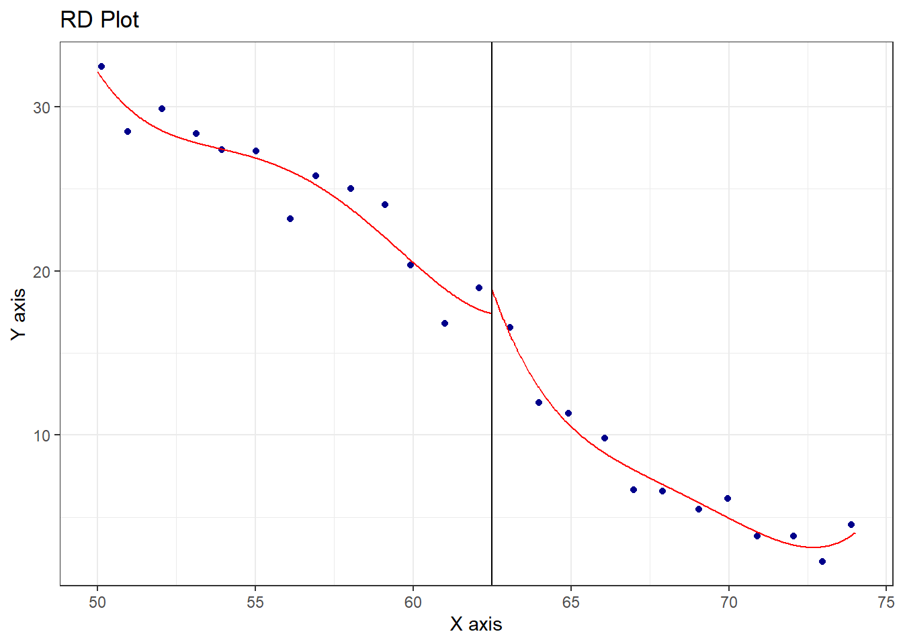
Iseloomustamaks funktsionaalse kuju ja lõikepunkti valiku mõju, siis kui oleksime nõudnud lineaarset seost vanuse ja töötundide vahel ja paneks piiri 63.5 (sest tööturukäitumise kohandamine võtab aega), oleks mõju ca 4 tundi vähem töötunde nädalas, küll pole see statistiliselt oluline:
rdplot(y = df$hours, x = df$age, c = 63.5, p = 1)[1] "Mass points detected in the running variable."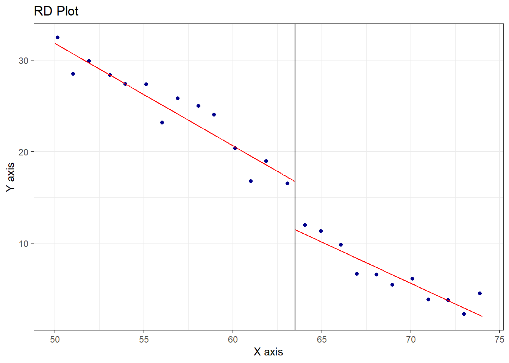
rdrobust(y = df$hours, x = df$age, c = 63.5, p = 1) %>%
summary()Warning in rdrobust(y = df$hours, x = df$age, c = 63.5, p = 1): Mass points
detected in the running variable.Sharp RD estimates using local polynomial regression.
Number of Obs. 2607
BW type mserd
Kernel Triangular
VCE method NN
Number of Obs. 1708 899
Eff. Number of Obs. 472 292
Order est. (p) 1 1
Order bias (q) 2 2
BW est. (h) 3.701 3.701
BW bias (b) 5.826 5.826
rho (h/b) 0.635 0.635
Unique Obs. 14 11
=====================================================================
Point Robust Inference
Estimate z P>|z| [ 95% C.I. ]
---------------------------------------------------------------------
RD Effect -3.917 -1.207 0.228 [-12.433 , 2.958]
=====================================================================Edasijõudnutele: instrumentmuutuja kasutamine
Esimene samm on hinnata pensioni saamise tõenäosus. Kasutage lineaarset tõenäosusmudelit koos overpenage ja lineaarse ja ruudukujul vanusega. Seejärel prognoosige pensioni saamise tõenäosus. Pange nimeks “pensionhat”. Hinnake tundide võrrand, kus pensioni saamise asemel on selgitavaks teguriks prognoositav pensioni saamine “pensionhat”.
pensmodel <- lm(pension ~ overpenage + agec + agec2, data = df)
summary(pensmodel)
Call:
lm(formula = pension ~ overpenage + agec + agec2, data = df)
Residuals:
Min 1Q Median 3Q Max
-1.01937 -0.21779 -0.01524 0.08558 0.96070
Coefficients:
Estimate Std. Error t value Pr(>|t|)
(Intercept) 0.4970274 0.0159821 31.099 < 2e-16 ***
overpenage 0.3611695 0.0287180 12.576 < 2e-16 ***
agec 0.0248456 0.0020332 12.220 < 2e-16 ***
agec2 -0.0009418 0.0001543 -6.105 1.18e-09 ***
---
Signif. codes: 0 '***' 0.001 '**' 0.01 '*' 0.05 '.' 0.1 ' ' 1
Residual standard error: 0.3519 on 2603 degrees of freedom
Multiple R-squared: 0.5027, Adjusted R-squared: 0.5022
F-statistic: 877.2 on 3 and 2603 DF, p-value: < 2.2e-16Meeldetuletus: kui palju pensioniikka jõudmine suurendas tõenäosust pensioni saada? Vaata “overpenage” kordajat.
Prognoosime pensioni saamise, nimetame muutuja ‘pensionhat’.
df$pensionhat <- predict(pensmodel)
summary(df$pensionhat) Min. 1st Qu. Median Mean 3rd Qu. Max.
0.0393 0.2178 0.4290 0.5370 0.9509 1.0194 Hindame töötundide võrrandi, kus sees on prognoositud tõenäosus pension saada.
modelf <- lm(hours ~ pensionhat + agec + agec2, data = df)
summary(modelf)
Call:
lm(formula = hours ~ pensionhat + agec + agec2, data = df)
Residuals:
Min 1Q Median 3Q Max
-31.788 -13.444 -2.498 13.743 63.256
Coefficients:
Estimate Std. Error t value Pr(>|t|)
(Intercept) 23.503075 2.745330 8.561 < 2e-16 ***
pensionhat -11.081325 4.141871 -2.675 0.00751 **
agec -0.823388 0.201762 -4.081 4.62e-05 ***
agec2 -0.010058 0.007967 -1.263 0.20687
---
Signif. codes: 0 '***' 0.001 '**' 0.01 '*' 0.05 '.' 0.1 ' ' 1
Residual standard error: 18.33 on 2603 degrees of freedom
Multiple R-squared: 0.2146, Adjusted R-squared: 0.2137
F-statistic: 237.1 on 3 and 2603 DF, p-value: < 2.2e-16Pensioniikka jõudmise mõju töötundide vähendamisele on ligi 11 tundi. See on sarnane käsitsi hinnatud LATEga (vt üles).
Käsk ivreg teeb selle kahesammulise hindamise automaatselt.
fuzzyreg <- ivreg(
hours ~ pension + agec + agec2 | overpenage + agec + agec2,
data = df
)
summary(fuzzyreg)
Call:
ivreg(formula = hours ~ pension + agec + agec2 | overpenage +
agec + agec2, data = df)
Residuals:
Min 1Q Median 3Q Max
-32.224 -12.008 -2.667 11.570 67.354
Coefficients:
Estimate Std. Error t value Pr(>|t|)
(Intercept) 23.503075 2.490179 9.438 < 2e-16 ***
pension -11.081325 3.756926 -2.950 0.00321 **
agec -0.823388 0.183010 -4.499 7.12e-06 ***
agec2 -0.010058 0.007226 -1.392 0.16408
Diagnostic tests:
df1 df2 statistic p-value
Weak instruments 1 2603 158.17 < 2e-16 ***
Wu-Hausman 1 2602 19.74 9.23e-06 ***
Sargan 0 NA NA NA
---
Signif. codes: 0 '***' 0.001 '**' 0.01 '*' 0.05 '.' 0.1 ' ' 1
Residual standard error: 16.63 on 2603 degrees of freedom
Multiple R-Squared: 0.3538, Adjusted R-squared: 0.3531
Wald test: 288.2 on 3 and 2603 DF, p-value: < 2.2e-16 vaadake kordajat pension Pensioniikka jõudmise mõju töötundide vähendamisele on ligi 11 tundi.
Paindlikum mudel
Võime kasutada veelgi paindlikumat mudelit, lokaalset lineaarset regressioonimudelit, taas paketist rdrobust.
rdrobust(y = df$hours, x = df$age, c = 62.5, fuzzy = df$pension) %>%
summary()Warning in rdrobust(y = df$hours, x = df$age, c = 62.5, fuzzy = df$pension):
Mass points detected in the running variable.Fuzzy RD estimates using local polynomial regression.
Number of Obs. 2607
BW type mserd
Kernel Triangular
VCE method NN
Number of Obs. 1608 999
Eff. Number of Obs. 472 332
Order est. (p) 1 1
Order bias (q) 2 2
BW est. (h) 4.500 4.500
BW bias (b) 7.303 7.303
rho (h/b) 0.616 0.616
Unique Obs. 13 12
First-stage estimates.
=====================================================================
Point Robust Inference
Estimate z P>|z| [ 95% C.I. ]
=====================================================================
Rd Effect 0.193 2.134 0.033 [0.014 , 0.319]
=====================================================================
Treatment effect estimates.
=====================================================================
Point Robust Inference
Estimate z P>|z| [ 95% C.I. ]
---------------------------------------------------------------------
RD Effect 0.930 0.190 0.849 [-33.306 , 40.450]
=====================================================================Selle paindliku mudeli järgi ei ole seost pensioniea ja töötundide vahel. Seost ei ole, sest muutus töötundides võib olla mittelineaarse seose tulemus vanuse ja töötundide vahel.
Platseebo-test
Vaatame, kas vanuses 63 on hüpe erinev võrreldes teiste lõikepunktidega. Me sooviksime näha, et 63 on hüpe kõrge ja mujal ei ole erinevused statistiliselt olulised.
#Meie väljund
y <- as.numeric(df$pension)
#jooksev muutuja
x <- as.numeric(df$age)
# Võimalikud lõikepunktid
cuts <- seq(60, 65, by = 0.5)
#Funktsioon võtmaks välja meie hinnangud
extract_rd <- function(cu) {
out <- rdrobust(y = y, x = x, c = cu)
est <- out$Estimate
# Meie hinnangud
tau_us <- est[1, "tau.us"]
se_us <- est[1, "se.us"]
tau_rb <- est[1, "tau.bc"]
se_rb <- est[1, "se.rb"]
#Teeme tabeli
data.frame(cutoff = cu, tau_us = tau_us, se_us = se_us, tau_rb = tau_rb, se_rb = se_rb)
}Ja nüüd rakendame tabelit. Kasutame Ri käsku mapdfr, mis annab tulemustest andmetabeli. Ja funktsiooniks on meie enda tehtud funktsioon extract_rd
res <- map_dfr(cuts, extract_rd) %>%
mutate(
#Ligilähedased 95% usalduspiirid robustsete hinnangutega
lwr_rb = tau_rb - 1.96 * se_rb,
upr_rb = tau_rb + 1.96 * se_rb,
#Ja tavapärased
lwr_us = tau_us - 1.96 * se_us,
upr_us = tau_us + 1.96 * se_us
)Warning in rdrobust(y = y, x = x, c = cu): Mass points detected in the running
variable.
Warning in rdrobust(y = y, x = x, c = cu): Mass points detected in the running
variable.
Warning in rdrobust(y = y, x = x, c = cu): Mass points detected in the running
variable.
Warning in rdrobust(y = y, x = x, c = cu): Mass points detected in the running
variable.
Warning in rdrobust(y = y, x = x, c = cu): Mass points detected in the running
variable.
Warning in rdrobust(y = y, x = x, c = cu): Mass points detected in the running
variable.
Warning in rdrobust(y = y, x = x, c = cu): Mass points detected in the running
variable.
Warning in rdrobust(y = y, x = x, c = cu): Mass points detected in the running
variable.
Warning in rdrobust(y = y, x = x, c = cu): Mass points detected in the running
variable.
Warning in rdrobust(y = y, x = x, c = cu): Mass points detected in the running
variable.
Warning in rdrobust(y = y, x = x, c = cu): Mass points detected in the running
variable.Ja paneme tulemused joonisele. Kasutan praegu tavalisi standardvigu (mitte nihkega- korrigeeritud.)
#
ggplot(res, aes(x = cutoff, y = tau_us)) +
geom_ribbon(aes(ymin = lwr_us, ymax = upr_us), alpha = 0.2) +
geom_point() +
geom_line() +
geom_hline(yintercept = 0, linetype = "dashed") +
geom_vline(xintercept = 62.5, linetype = "dotted") +
labs(
title = "Platseebo hinnangud koos ligilähedase 95% usalduspiiridega",
x = "Lõikepunkt",
y = "Hinnang (nihkega korrigeerimata)"
) +
theme_minimal()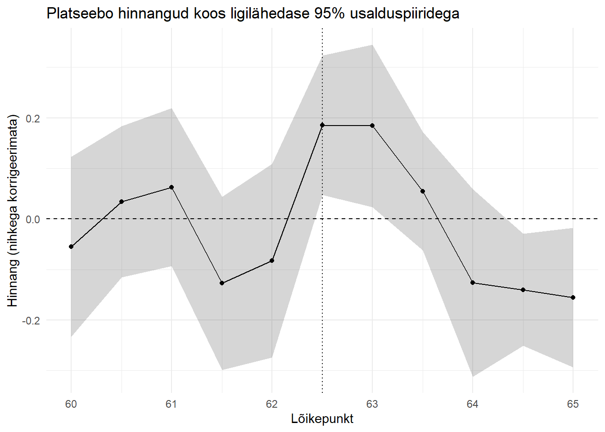
Ja ka robustsed usalduspiirid.
ggplot(res, aes(x = cutoff, y = tau_rb)) +
geom_ribbon(aes(ymin = lwr_rb, ymax = upr_rb), alpha = 0.2) +
geom_point() +
geom_line() +
geom_hline(yintercept = 0, linetype = "dashed") +
geom_vline(xintercept = 62.5, linetype = "dotted") +
labs(
title = "Platseebo hinnangud koos ligilähedase 95% usalduspiiridega",
x = "Lõikepunkt",
y = "Hinnang (nihkega korrigeerimata)"
) +
theme_minimal()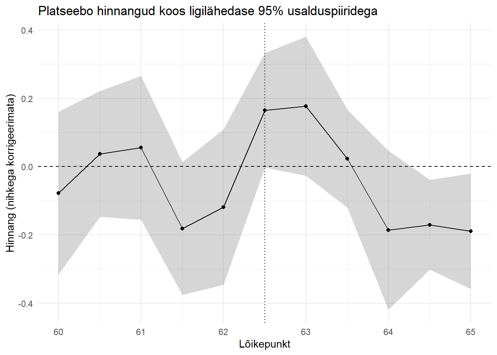
Joonistelt näeme, et tõepoolest kas vanus 62.5 või 63 on see, kus on statistiliselt oluline hüpe pensioni saamise tõenäosuses. Samas on mingi kummaline tõenäosuse vähenemine hoopis vanuses 65, mis muidugi ei saa olla tõene, aga viitab metoodika nõrkusele.
Platseebo test ka töötundidele
Nüüd peame muutma funktsiooni keerukamaks, et ta võtaks arvesse meie hägusat disaini
#Meie väljund muutub
y <- as.numeric(df$hours)
#meede
z <- as.numeric(df$pension)
#jooksev muutuja
x <- as.numeric(df$age)
#Funktsioon võtmaks välja meie hinnangud
extract_rd <- function(cu) {
#See rida muutub
out <- rdrobust(y = y, x = x, c = cu, fuzzy = z)
est <- out$Estimate
# Meie hinnangud
tau_us <- est[1, "tau.us"]
se_us <- est[1, "se.us"]
tau_rb <- est[1, "tau.bc"]
se_rb <- est[1, "se.rb"]
#Teeme tabeli
data.frame(cutoff = cu, tau_us = tau_us, se_us = se_us, tau_rb = tau_rb, se_rb = se_rb)
}Ja taas rakendame
res <- map_dfr(cuts, extract_rd) %>%
mutate(
#Ligilähedased 95% usalduspiirid robustsete hinnangutega
lwr_rb = tau_rb - 1.96 * se_rb,
upr_rb = tau_rb + 1.96 * se_rb,
#Ja tavapärased
lwr_us = tau_us - 1.96 * se_us,
upr_us = tau_us + 1.96 * se_us
)Warning in rdrobust(y = y, x = x, c = cu, fuzzy = z): Mass points detected in
the running variable.
Warning in rdrobust(y = y, x = x, c = cu, fuzzy = z): Mass points detected in
the running variable.
Warning in rdrobust(y = y, x = x, c = cu, fuzzy = z): Mass points detected in
the running variable.
Warning in rdrobust(y = y, x = x, c = cu, fuzzy = z): Mass points detected in
the running variable.
Warning in rdrobust(y = y, x = x, c = cu, fuzzy = z): Mass points detected in
the running variable.
Warning in rdrobust(y = y, x = x, c = cu, fuzzy = z): Mass points detected in
the running variable.
Warning in rdrobust(y = y, x = x, c = cu, fuzzy = z): Mass points detected in
the running variable.
Warning in rdrobust(y = y, x = x, c = cu, fuzzy = z): Mass points detected in
the running variable.
Warning in rdrobust(y = y, x = x, c = cu, fuzzy = z): Mass points detected in
the running variable.
Warning in rdrobust(y = y, x = x, c = cu, fuzzy = z): Mass points detected in
the running variable.
Warning in rdrobust(y = y, x = x, c = cu, fuzzy = z): Mass points detected in
the running variable.Ning tulemused
#
ggplot(res, aes(x = cutoff, y = tau_us)) +
geom_ribbon(aes(ymin = lwr_us, ymax = upr_us), alpha = 0.2) +
geom_point() +
geom_line() +
geom_hline(yintercept = 0, linetype = "dashed") +
geom_vline(xintercept = 62.5, linetype = "dotted") +
labs(
title = "Platseebo hinnangud - pensioniea mõju töötundidele",
x = "Lõikepunkt",
y = "Hinnang (nihkega korrigeerimata)"
) +
theme_minimal()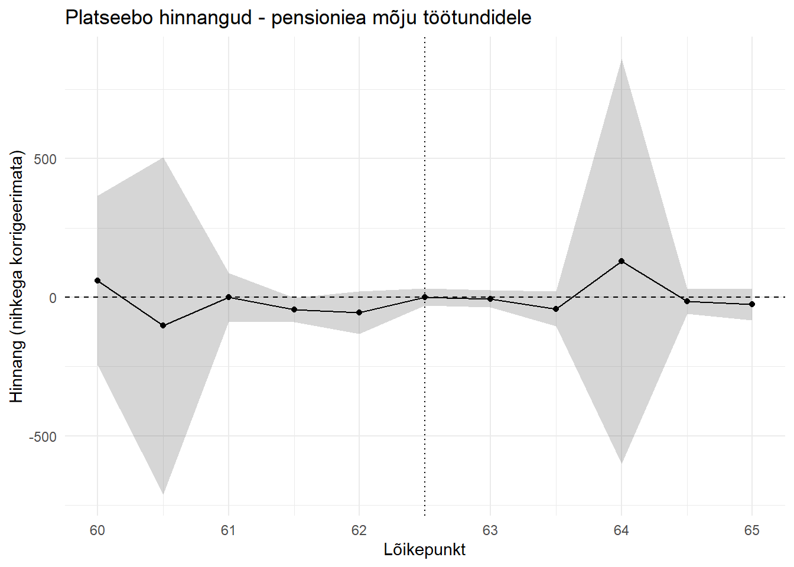
Näeme, et mõjud kõiguvad väga palju. Mingeid erilist hüpet või muutust me ei näe pensioniea juures. Pigem on mingid anomaaliad vanuses 64.
Kokkuvõtteks, me tõesti näeme hüpet pensioniea lähedases vanuses pensioni saajate seas. Kuid me ei saa ümber lükata nüll hüpoteesi, et töötundidele otsest pensionieani jõudmine avaldaks mõju. Töötundide vähenemine toimub sujuvalt.